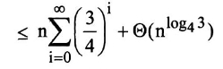

Q.9: Solve the recurrence relation: T(n) = 3 (n/4) + n
Answer:
Given
T(n) = 3 (n/4) + n
But the recurrence relation should be
T(n) = 3T(n/4) + n We iterate is as follows -
T(n) = n + 3T(n/4)
= n + 3(n/4 + 3T(n/16)) = n + 3(n/4 + 3(n/16) + 3T(n/64))
= n + 3(n/4) + 9(n/16) + 27T(n/64)
where ((n/4)/4) = (n/16) and ((n/16)/4) = (n/64).
The ith term in the series is 3i(n/4i). The iterations hits n = 1 when (n/4i) = 1 or, equivalently, when i exceeds log4n. By continuing the iteration until this point, we discover that the summation contains a decreasing geometric series
T(n) <= n + 3n/4 + 9n/16 + 27n/64 + ... + 3log4n
Ɵ (1)

= 4n + o(n)
=
O(n)
Here, we concluded that 3log4n = nlog43 and we have used the fact that log43 < 1 to conclude that
Ɵ nlog43 = o(n).